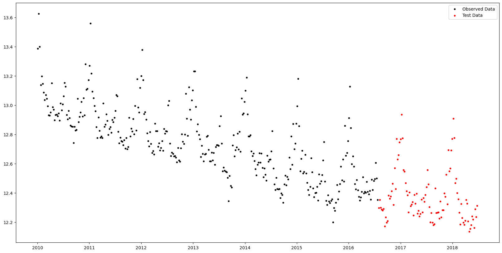
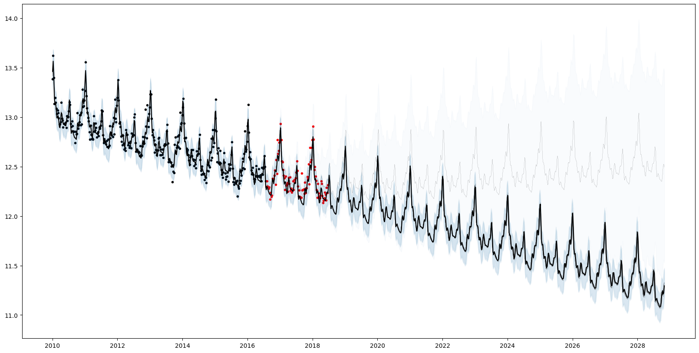
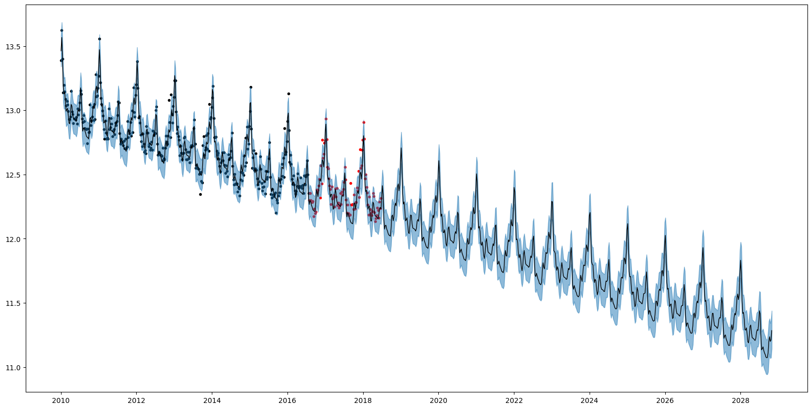
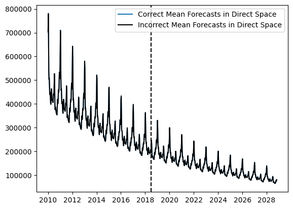
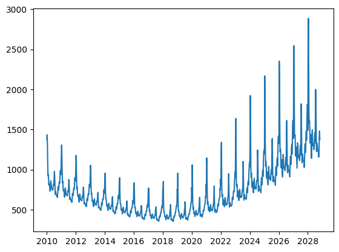

Insurance Claims
This tutorial uses AutoGP to discover time series models of weekly insurance claims data.
import AutoGP
import CSV
import Dates
import DataFrames
using PyPlot: pltWe first load the iclaims.csv dataset from disk. Since the data is positive we apply a log transform and perform all modeling in this transformed space.
data = CSV.File("assets/iclaims.csv"; header=[:ds, :y], types=Dict(:ds=>Dates.Date, :y=>Float64));
df = DataFrames.DataFrame(data)
df[:,"y"] = log.(df[:,"y"])
show(df)[1m [0m│ ds y
─────┼─────────────────────
1 │ 2010-01-03 13.3866
2 │ 2010-01-10 13.6242
3 │ 2010-01-17 13.3987
4 │ 2010-01-24 13.1375
5 │ 2010-01-31 13.1968
6 │ 2010-02-07 13.147
7 │ 2010-02-14 13.0859
8 │ 2010-02-21 13.035
9 │ 2010-02-28 13.0704
10 │ 2010-03-07 13.0448
11 │ 2010-03-14 12.9924
12 │ 2010-03-21 12.9314
⋮ │ ⋮ ⋮
433 │ 2018-04-15 12.3287
434 │ 2018-04-22 12.2068
435 │ 2018-04-29 12.1359
436 │ 2018-05-06 12.1562
437 │ 2018-05-13 12.1819
438 │ 2018-05-20 12.2407
439 │ 2018-05-27 12.2202
440 │ 2018-06-03 12.1628
441 │ 2018-06-10 12.289
442 │ 2018-06-17 12.2357
443 │ 2018-06-24 12.3139
[36m 420 rows omitted[0mLet's hold out the final 100 weeks of observations to serve as test data.
n_test = 100
n_train = DataFrames.nrow(df) - n_test
df_train = df[1:end-n_test, :]
df_test = df[end-n_test+1:end, :]
fig, ax = plt.subplots()
ax.scatter(df_train.ds, df_train.y, marker=".", color="k", label="Observed Data")
ax.scatter(df_test.ds, df_test.y, marker=".", color="r", label="Test Data")
ax.legend()
fig.set_size_inches((20, 10))
The next step is to initialize an AutoGP.GPModel instance and fit the model using sequential Monte Carlo structure learning.
model = AutoGP.GPModel(df_train.ds, df_train.y; n_particles=8);AutoGP.seed!(10)
schedule = AutoGP.Schedule.linear_schedule(n_train, .20)
AutoGP.fit_smc!(model; schedule=schedule, n_mcmc=50, n_hmc=10, shuffle=true, adaptive_resampling=false, verbose=true);Running SMC round 69/343
Particle Weights: [3.38e-32, 4.11e-20, 7.26e-29, 1.02e-44, 4.74e-57, 9.10e-04, 9.99e-01, 2.71e-17]
Particle ESS: 0.1252276603207894
resampled true
accepted MCMC[4/50] HMC[40/40]
accepted MCMC[6/50] HMC[48/50]
accepted MCMC[8/50] HMC[62/64]
accepted MCMC[7/50] HMC[61/63]
accepted MCMC[7/50] HMC[68/69]
accepted MCMC[9/50] HMC[73/77]
accepted MCMC[12/50] HMC[92/97]
accepted MCMC[14/50] HMC[114/118]
Running SMC round 138/343
Particle Weights: [1.10e-01, 1.39e-01, 1.98e-01, 1.71e-01, 1.66e-01, 1.78e-01, 1.80e-02, 2.08e-02]
Particle ESS: 0.7836676673226702
resampled true
accepted MCMC[2/50] HMC[3/5]
accepted MCMC[3/50] HMC[15/17]
accepted MCMC[13/50] HMC[0/13]
accepted MCMC[15/50] HMC[0/15]
accepted MCMC[8/50] HMC[17/24]
accepted MCMC[8/50] HMC[12/20]
accepted MCMC[12/50] HMC[20/32]
accepted MCMC[16/50] HMC[62/73]
Running SMC round 207/343
Particle Weights: [1.21e-18, 1.72e-18, 1.00e+00, 3.00e-20, 1.48e-12, 2.59e-17, 8.86e-18, 1.49e-17]
Particle ESS: 0.12500000000036948
resampled true
accepted MCMC[8/50] HMC[0/8]
accepted MCMC[10/50] HMC[0/10]
accepted MCMC[10/50] HMC[0/10]
accepted MCMC[12/50] HMC[0/12]
accepted MCMC[11/50] HMC[0/11]
accepted MCMC[12/50] HMC[0/12]
accepted MCMC[13/50] HMC[0/13]
accepted MCMC[16/50] HMC[2/18]
Running SMC round 276/343
Particle Weights: [1.52e-01, 1.63e-04, 1.51e-01, 4.79e-01, 1.04e-01, 9.47e-02, 1.76e-02, 1.36e-03]
Particle ESS: 0.42322820857724425
resampled true
accepted MCMC[7/50] HMC[0/7]
accepted MCMC[11/50] HMC[0/11]
accepted MCMC[11/50] HMC[1/12]
accepted MCMC[12/50] HMC[0/12]
accepted MCMC[12/50] HMC[0/12]
accepted MCMC[13/50] HMC[1/14]
accepted MCMC[19/50] HMC[0/19]
accepted MCMC[20/50] HMC[0/20]
Running SMC round 343/343
Particle Weights: [4.25e-03, 3.87e-04, 5.39e-03, 5.37e-03, 2.16e-04, 5.35e-01, 4.40e-01, 9.31e-03]
Particle ESS: 0.2603461961652077
accepted MCMC[10/50] HMC[0/10]
accepted MCMC[10/50] HMC[0/10]
accepted MCMC[12/50] HMC[0/12]
accepted MCMC[14/50] HMC[0/14]
accepted MCMC[13/50] HMC[1/14]
accepted MCMC[16/50] HMC[0/16]
accepted MCMC[14/50] HMC[1/15]
accepted MCMC[17/50] HMC[0/17]Plotting the forecasts from each particle reflects the structural uncertainty. 7/8 particles have inferred a periodic component (AutoGP.GP.Periodic) with additive linear trend AutoGP.GP.Linear. 1/8 of the particles has inferred a sum of a periodic kernel and gamma exponential (AutoGP.GP.GammaExponential) kernel, which is stationary but not "smooth" (formally, not mean-square differentiable).
# Generate in-sample and future predictions.
ds_future = range(start=df_test.ds[end]+Dates.Week(1), step=Dates.Week(1), length=54*10)
ds_query = vcat(df_train.ds, df_test.ds, ds_future)
forecasts = AutoGP.predict(model, ds_query; quantiles=[0.025, 0.975]);
weights = AutoGP.particle_weights(model)
# Plot the data.
fig, ax = plt.subplots()
ax.scatter(df_train.ds, df_train.y, marker=".", color="k", label="Observed Data")
ax.scatter(df_test.ds, df_test.y, marker=".", color="r", label="Test Data")
# Plot the forecasts from each particle.
for i=1:AutoGP.num_particles(model)
subdf = forecasts[forecasts.particle.==i,:]
ax.plot(subdf[!,"ds"], subdf[!,"y_mean"], color="k", linewidth=.1)
ax.fill_between(
subdf.ds, subdf[!,"y_0.025"], subdf[!,"y_0.975"];
color="tab:blue", alpha=0.025)
end
# Plot the grand mean.
mvn = AutoGP.predict_mvn(model, ds_query)
ax.plot(ds_query, AutoGP.Distributions.mean(mvn), color="k");
fig.set_size_inches((20, 10))
for (w, k) in zip(AutoGP.particle_weights(model), AutoGP.covariance_kernels(model))
println("Particle weight $(w)")
display(k)
endParticle weight 0.004250523793201452
＋
├── LIN(0.43; 0.06, 0.40)
└── PER(0.27, 0.15; 0.12)
Particle weight 0.00038679558572478394
＋
├── LIN(0.21; 0.48, 0.28)
└── PER(0.31, 0.15; 0.14)
Particle weight 0.0053919770385277765
＋
├── PER(0.27, 0.15; 0.12)
└── LIN(0.10; 0.11, 1.58)
Particle weight 0.005373167226484039
＋
├── LIN(0.55; 0.04, 0.06)
└── PER(0.27, 0.15; 0.12)
Particle weight 0.00021615764118894197
＋
├── LIN(0.45; 0.05, 0.18)
└── PER(0.27, 0.15; 0.12)
Particle weight 0.5354267607554092
＋
├── PER(0.27, 0.15; 0.12)
└── LIN(0.22; 0.19, 0.18)
Particle weight 0.43964210411447696
＋
├── LIN(0.09; 0.12, 0.11)
└── PER(0.23, 0.15; 0.11)
Particle weight 0.00931251384499995
＋
├── GE(1.72, 1.66; 0.13)
└── PER(0.29, 0.15; 0.12)We can also query the overall quantiles of the predictive distribution over new data by using AutoGP.predict_quantile.
# Obtain overall quantiles.
quantiles_lo, = AutoGP.predict_quantile.(Ref(model), Ref(ds_query), .025, tol=1e-6)
quantiles_md, = AutoGP.predict_quantile.(Ref(model), Ref(ds_query), .50, tol=1e-6)
quantiles_hi, = AutoGP.predict_quantile.(Ref(model), Ref(ds_query), .975, tol=1e-6)
# Plot the combined predictions.
fig, ax = plt.subplots()
ax.scatter(df_train.ds, df_train.y, marker=".", color="k", label="Observed Data")
ax.scatter(df_test.ds, df_test.y, marker=".", color="r", label="Test Data")
ax.plot(ds_query, quantiles_md, color="k", linewidth=1)
ax.fill_between(ds_query, quantiles_lo, quantiles_hi, color="tab:blue", alpha=.5)
fig.set_size_inches((20, 10))
Mean forecasts, quantile forecasts, and probability densities values obtained via AutoGP.predict and AutoGP.predict_proba are all in the transformed (log space). Only quantile forecasts can be transformed back to direct space via exp. Converting mean forecasts and probability densities can be performed by using the Distributions.MvLogNormal constructor, as demonstrated below.
import Distributions
log_mvn_components = [Distributions.MvLogNormal(d) for d in Distributions.components(mvn)]
log_mvn_weights = Distributions.probs(mvn)
log_mvn = Distributions.MixtureModel(log_mvn_components, log_mvn_weights);fig, ax = plt.subplots()
ax.plot(ds_query, Distributions.mean(log_mvn), color="tab:blue", label="Correct Mean Forecasts in Direct Space")
ax.plot(ds_query, exp.(Distributions.mean(mvn)), color="k", label="Incorrect Mean Forecasts in Direct Space")
ax.axvline(df_test.ds[end], color="k", linestyle="--")
ax.legend()
PyObject <matplotlib.legend.Legend object at 0x7f5b068d02e0>The difference between the blue and black curves is too small to observe on the scale above; let us plot the bias that arises from doing a naive transformation of the predictive mean.
fig, ax = plt.subplots()
ax.plot(ds_query, Distributions.mean(log_mvn) - exp.(Distributions.mean(mvn)));